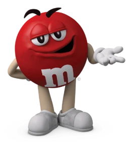

<!Doctype html>
<meta charset="UTF-8">

<html>
    <head>
      <title>UG</title>
      <script src="https://dibs-web01.vm.duke.edu/debrigard/UG-causation/exp/jstat-1.x/dist/jstat.js"></script>
      <script src="https://dibs-web01.vm.duke.edu/debrigard/UG-causation/exp/jspsych-6.1.0-1/jspsych.js"></script>
      <script src="https://dibs-web01.vm.duke.edu/debrigard/UG-causation/exp/jspsych-6.1.0-1/plugins/jspsych-external-html.js"></script>
      <script src="https://dibs-web01.vm.duke.edu/debrigard/UG-causation/exp/jspsych-6.1.0-1/plugins/jspsych-instructions.js"></script>
      <script src="https://dibs-web01.vm.duke.edu/debrigard/UG-causation/exp/jspsych-6.1.0-1/plugins/jspsych-html-button-response.js"></script>
      <script src="https://dibs-web01.vm.duke.edu/debrigard/UG-causation/exp/jspsych-6.1.0-1/plugins/jspsych-html-slider-response.js"></script>
      <script src="https://dibs-web01.vm.duke.edu/debrigard/UG-causation/exp/jspsych-6.1.0-1/plugins/jspsych-survey-html-form.js"></script>
      <script src="https://dibs-web01.vm.duke.edu/debrigard/UG-causation/exp/jspsych-6.1.0-1/plugins/jspsych-survey-text.js"></script>
      <link href="https://dibs-web01.vm.duke.edu/debrigard/UG-causation/exp/jspsych-6.1.0-1/css/jspsych.css" rel="stylesheet" type="text/css"></link>
      <script src="https://ajax.googleapis.com/ajax/libs/jquery/3.4.1/jquery.min.js"></script>
    </head>
    <body></body>
</html>

<script>
/* Data parameters */
var DATA_DIR = "data";
var EXP_NAME = "pilot";

/* Task Parameters */
var TEST = false;  // set to true to skip instructions/consent
var TRIALS = 0;


/* A convenience function for creating check questions */
function check_q(name, text, choices, correctAns, loopUntilCorrect=true, required=true) {
  let shuffledChoices = jsPsych.randomization.shuffle(choices);
  let inputHTML = "<div align='left'>";
  shuffledChoices.forEach(function (c) {
    inputHTML = inputHTML +
    '<input style="float: left; display: block; margin-top: 8px;" type="radio" id="' + c +
    '" name="' + name + '" value="' + c + '"><label for="' + c +
    '" style="font-size: 12px; display: block; margin-left: 35px;">' +
    c + '</label>'
  });
  inputHTML = inputHTML + '</div><br>';

  return {
    timeline: [{
      type: 'survey-html-form',
      html: "<p>" + text + "</p>" + inputHTML
    }],
    on_finish: function (data) {
      data.response = JSON.parse(data.responses)[name];
      data.measure = name;
      data.choices = shuffledChoices;
      data.button_pressed = shuffledChoices.indexOf(data.response);
      delete data.responses;
    },

    loop_function: function (data) {
      let response = data.values()[0].response;
      let responded = response != undefined;
      let correct = response == choices[correctAns];

      if (required && !responded) {
        alert('Please respond to the question.');
	      return true;
      }

      if (responded && loopUntilCorrect && !correct) {
	      alert('Your response is incorrect. Please try again.');
        return true;
      }
      return false;
    }
  };
}
</script>

<script src="exp-accept.js"></script>
<script src="exp-propose.js"></script>

<script>
var timeline = [];
  
/* Get informed consent */
var consent = {
  type:'external-html',
  url: "consent.html",
  cont_btn: "start",
  check_fn: function (elem) {
    if (document.getElementById('consent_checkbox').checked) {
      // If we're on mTurk, make sure the HIT has been accepted
      let turkData = jsPsych.turk.turkInfo();
      if (!turkData.outsideTurk && turkData.previewMode) {
        alert("Please accept the HIT to continue.");
        return false;
      }
      return true;
    }

    alert("If you wish to participate, you must check the box next to the statement 'I agree to participate in this study.'");
    return false;
  }
};
if (!TEST) {
  timeline.push(consent);
  TRIALS = TRIALS + 1;
}


/* create timeline */
var accept_timeline = [];
var ACCEPT_TRIALS = 0;

/* Display instructions trials */
var instructions_accept = {
  type: 'instructions',
  pages: ["<p>Please pay attention and carefully read the following instructions.</p><p>In this HIT, you are going to play a game. " +
    "There are two players: you, and a partner. In every round of this game, you and your partner receive " + stakes_txt + " ($" + stakes.toFixed(2) +
    "), and you must decide how to split it between the two of you.</p><br><p>Here's how it works:</p>",
    "<p>First, your partner will offer you some portion of the money.</p><p>They can offer you any amount between $0.00 and $" + stakes.toFixed(2) + ".</p>",
    "<p>Once your partner makes an offer, you may either accept or reject this offer.</p>" +
    "<p>If you accept the offer, then you will receive the amount of money offered to you, and your partner will get the rest.</p>" +
    "<p>If you reject the offer, then nobody gets any money in that round.</p><br>",
    "<p>Since you will be playing this game many times, you will <b>not</b> receive money from every round of the game.</p>" +
    "<p><b>But, you will receive the amount of money that you earn from a randomly selected round of the game as a bonus through mTurk. </b>" +
    "For example, if you accepted an offer of $5.00 on the randomly chosen round, you will receive a bonus of $5.00 after the HIT is completed. " +
    "But, if you rejected your partner's offer of $5.00, you will recieve no bonus at all.</p>" +
    "<p><b>So, make sure to play each round like real money is up for grabs- you never know which round of the game you will get a bonus from!</b></p>",
    "<p>In addition to clicking on the buttons, you may use the left and right arrow keys to make quicker responses.</p>",
    "" +
    "" +
    "" +
    "<p>One more thing about this game: in each round of the game, " +
    "you will play with one of three partners: Red, Yellow, or Blue. " +
    "Before each round, you will be told which partner you are playing with.</p>" +
    "You're now finished with the instructions."],
  show_clickable_nav: true
};
if (!TEST) {
  timeline.push(instructions_accept);
}

/* Display check questions and loop until correct */
var check_choices = ["You get the amount of money specified in the offer, but your partner gets nothing.",
                     "Neither player recieves any money",
                     "Your partner gets the amount of money specified in the offer, and you get the rest.",
                     "You get the amount of money specified in the offer, and your partner gets the rest."];
if (!TEST) {
    timeline.push(check_q("check1", "Check question: what happens when you accept an offer?", check_choices, 3),
		  check_q("check2", "Check question: what happens when you reject an offer?", check_choices, 1));
}

// Ask for a causal judgment after the player accepts/rejects
var accept_cause = {
  type: 'html-slider-response',
  stimulus: function () {
    d = jsPsych.data.getLastTrialData().values()[0];
    return avatar() + "<p>You have " + d.response + "ed " +
      d.player + "'s offer of $" + d.offer +
      " out of $" + stakes.toFixed(2) + "." +
      "As a result, you have earned $" + d.earned + ".</p><br>" +
      "<p><b>To what extent did you earn $" + d.earned +
      " in this round because " + d.player +
      " made an offer of $" + d.offer + "?</b></p><br>"
  },
  labels: ["not at all", "totally"],
  trial_duration: TRIAL_DURATION
};


if (learnTrials > 0) {
    accept_timeline.push(accept_cause);
}


/* Display post-questionnaire */
var sex_q = check_q('sex', '<p>What is your sex?</p>',
                    ['Male', 'Female', 'Other'], undefined, false);
var age_q = {
  timeline: [{type: 'survey-text',
              questions: [{name: "age", prompt: "What is your age?", required: true}],
              on_finish: function (data) {
                data.measure = "age";
                data.response = JSON.parse(data.responses).age;
                delete data.responses;
              }}],
  loop_function: function (data) {
    let loop = isNaN(parseInt(data.values()[0].response));
    if (loop) alert("Please enter in your age as a number.");
    return loop;
  }
};
var id_q = {
  type: 'survey-text',
  questions: [{name: "mTurkID", prompt: "If you are completing this experiment through Amazon Mechanical Turk, what is your mTurk worker ID?", required: true}],
  on_finish: function (data) {
    data.measure = "mTurkID",
    data.response = JSON.parse(data.responses).mTurkID;
    delete data.responses;
  }
};
 
var debrief_q = {
  type: 'survey-text',
  questions: [{name: "debrief", prompt: "The three players you were playing this game with were in fact just computer programs that accept and reject offers at particular rates. " +
  "Did you expect this? How human-like did you think the players were? How fair did you think the players were? Did you feel yourself treating the players differently?", required: true, rows: 5}],
  on_finish: function (data) {
    data.measure = "debrief";
    data.response = JSON.parse(data.responses).debrief;
    delete data.responses;
  }
};
var comments_q = {
  type: 'survey-text',
  questions: [{name: "comments", prompt: "Do you have anything else to add (comments, questions, etc)?", required: true, rows: 5}],
  on_finish: function (data) {
    data.measure = "comments";
    data.response = JSON.parse(data.responses).comments;
    delete data.responses;
  }
};
var attn_check = check_q('attnCheck',
  "<p align='left'>Please be honest when answering the following question. " +
  "<b>Your answer will not affect your payment or eligibility for future studies.</b></p>" +
  "<p align='left'>The study you have just participated in is a psychological study aimed at understanding human cognition and behavior. " +
  "Psychological research depends on participants like you. " +
  "Your responses to surveys like this one are an incredibly valuable source of data for researchers. " +
  "It is therefore crucial for research that participants pay attention, avoid distractions, " +
  "and take all study tasks seriously (even when they might seem silly).</p>" +
  "<p align='left'><b>Do you feel that you paid attention, avoided distractions, and took this survey seriously?</b></p>",
  ["No, I was distracted.",
  "No, I had trouble paying attention",
  "No, I did not take the study seriously",
  "No, something else affected my participation negatively.",
  "Yes."], 4, false);
timeline.push(id_q, age_q, sex_q, attn_check, debrief_q, comments_q);
TRIALS = TRIALS + 6;


/* start the experiment */
jsPsych.init({
  timeline: timeline,
  experiment_width: 600,
  preload_images: images,
  on_finish: async function (data) {
    // Display completion screen
    jsPsych.getDisplayElement().innerHTML =
        '<div><p>Thanks for completing this experiment!</p>' +
        '<p>Saving your data now......' +
        '<span id="done" style="visibility: hidden;">done!</span></p></div><br><br>' +
        '<p><b>You have earned a bonus of $' + b + '</b></p>' +
        '<p><b>Your completion code is: ' + id + '</b></p>';

    //  Save data via HTTP POST
    let dataToServer = {
        'id': id,
        'extension': 'csv',
        'directory': DATA_DIR,
        'experimentName': EXP_NAME,
        'curData': data.csv()
    };
    await $.post("https://dibs-web01.vm.duke.edu/debrigard/.../exp/save.php",
                 dataToServer,
                 function(data) {
    	             document.getElementById('done').style.visibility = "visible";
                 }).promise();
  }
});
</script>
